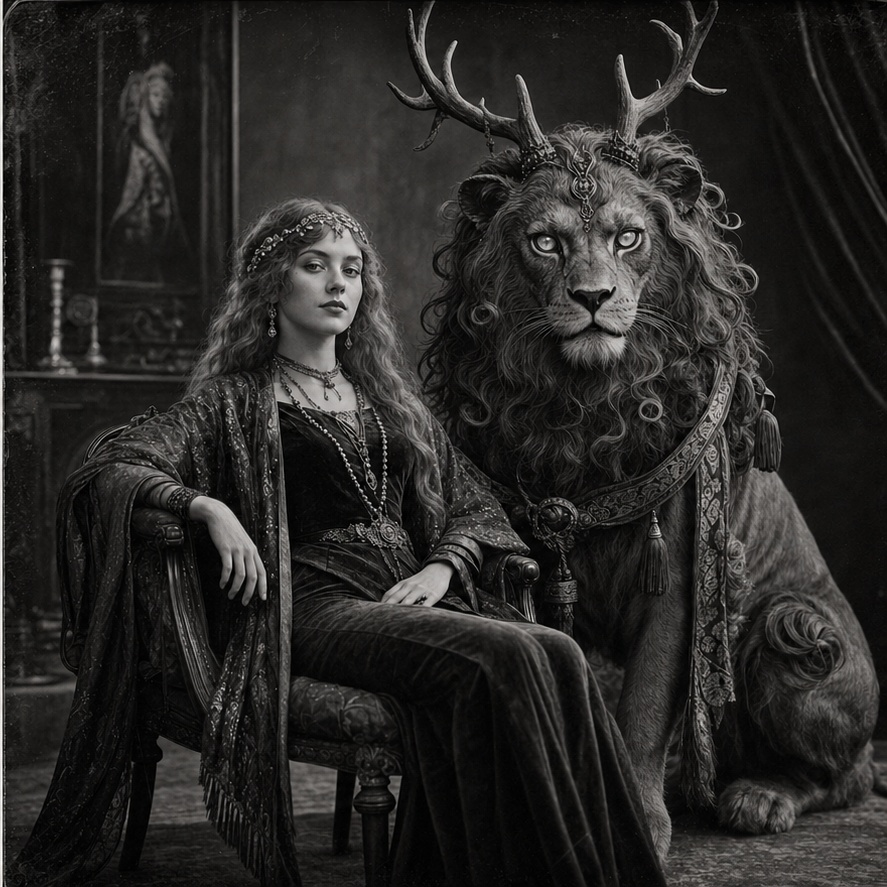

Sample Characters
Melody and Chuff
Glamour with teeth: the human-facing fae operator and the creature that proves the glamour is real.

Why Pair Them
Melody and Chuff belong together in reader terms. She makes the human world porous, and he is the living proof that something inhuman is already waiting on the other side.
Melody reads as glamour, access, performance, and dangerous grace. Chuff reads as the impossible answer waiting behind that glamour once the room realizes it is not just theater. They work best together because one makes the human world open, and the other proves that the opening is real.
Melody
Melody Manners survives by being exactly the sort of person human beings underestimate until it is too late. She is beautiful, socially fluid, fate-leaning, and faintly unreal even before anyone guesses how much faerie blood is actually moving under the surface. Melody knows how to charm a room, redirect a conversation, make a lie feel more comfortable than the truth, and move through the kinds of spaces where performance, seduction, danger, and opportunity all share a wall. She is not only decorative and not only a con artist. She is a liminal operator, someone built to turn glamour into access and access into leverage.That would already be enough to make her risky. Chuff is what makes her impossible to mistake for anything ordinary. He is not a separate free-floating companion so much as the inhuman truth that lives too close to her life to ever be excluded from it. He only works because he can remain near her, hide when necessary, survive what should not be survivable, and protect both Melody and the secrets around her. Together they create a pressure field rather than merely a duo: the socially legible fae-touched woman and the creature who proves the strangeness is not metaphorical. That is why their presence changes the gravity of a party so quickly. Melody makes the human world porous; Chuff makes sure the other side is already standing there when it opens.
For a new player, Melody should feel like someone who can talk her way into delicate spaces and survive the consequences only because she was never entirely human to begin with. Chuff should feel less like a pet or mascot and more like the protective, half-hidden shadow of that same truth. They belong together because the story they tell is one story: glamour with teeth, secrecy with loyalty, and the unsettling knowledge that the thing keeping her alive is also one of the clearest signs that she does not belong fully to the ordinary world anymore.
Chuff
Chuff is not a pet, mascot, or convenient fantasy mount. He is the visible proof that Melody Manners lives too close to the faerie world for ordinary explanations to survive contact with her. Built like a shrine guardian translated into living muscle, fur, antler, and watchfulness, he exists at the point where protection and unease become the same emotion. People are meant to look at him and understand, before anyone speaks, that whatever follows Melody is not metaphorical, theatrical, or safely domestic.His loyalty is real, but it is not the loyalty of a trained animal. Chuff protects Melody with the total seriousness of a being who appears to understand that she is his charge, his companion, and perhaps the condition under which he can remain properly anchored in the human world at all. He can hide, move, and endure like something built for impossible thresholds. His speed, silence, and predatory force make him terrifying when violence begins, but the stranger truth is that even at rest he alters the moral temperature of a room. He makes secrecy feel guarded, glamour feel dangerous, and every social scene around Melody feel as if it already has claws waiting just offstage.
For reader purposes, Chuff works best as Melody's inhuman counterpart rather than as an isolated creature profile. He is the faerie pressure inside her story made visible: beautiful in a way that is not safe, protective in a way that is not gentle, and supernatural in a way that refuses to stay symbolic. If Melody is the part of the pair that opens doors, smiles past suspicion, and makes the human world porous, Chuff is the ancient answer standing behind that opening, ensuring that what crosses through will not be mistaken for anything ordinary.